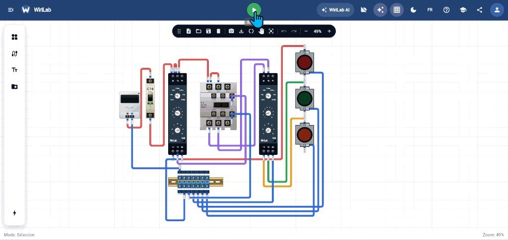

Industriel · Commande
Lire un montage contacteur + voyants avant d’appuyer sur Marche
Sur une armoire ou un panneau de formation, un départ industriel mélange souvent puissance (230 V ou plus), commande (24 V DC fréquent) et signalisation (voyants). Avant d’actionner le bouton vert « Marche », il faut savoir quoi doit s’allumer, quel contacteur doit coller, et quels fils relient la logique. Cette méthode évite de « tester au hasard ».

1. Séparer trois plans dans votre tête
Un schéma industriel se lit plus vite si vous isolez trois couches :
- Distribution : arrivée, disjoncteur ou fusible, bornes de répartition.
- Puissance : ce qui alimente moteurs, résistances, éclairage de machine — souvent via contacteurs.
- Commande / signalisation : boutons, relais auxiliaires, bobines 24 V, voyants.
Sur la capture, le C16 protège le départ. Les modules à côté préparent la logique (temporisations, seuils). Les contacteurs font le lien entre « ordre de marche » et « circulation de courant de puissance ». Les voyants confirment un état pour l’opérateur.
2. Vérification à froid (sans tension)
Avant toute mise sous tension, parcourez le câblage — sur papier ou à l’écran :
- Continuité logique : le fil de commande part-il bien du bouton vers la bobine du bon contacteur ?
- Neutre / retour : chaque bobine ou voyant a-t-il son retour (souvent 0 V ou neutre de commande) ?
- Pas de croisement évident : phase de puissance sur les bornes « charge », pas sur une borne bobine 24 V.
- Couleurs : en France, rouge/marron phase, bleu neutre, vert-jaune terre ; les fils de commande (gris, noir, violet) suivent le schéma du constructeur — ne supposez pas sans légende.
En TP, notez sur votre schéma : « Si j’appuie sur Marche, la bobine K1 doit être alimentée » puis « le contact K1-1 doit fermer la ligne vers la charge ».
3. Rôle des voyants
Chaque voyant a un sens métier à définir avant l’essai :
- Rouge : souvent défaut, arrêt d’urgence, ou « marche » selon la machine (lisez la légende du TP).
- Vert : fonctionnement normal, marche, disponibilité.
- Orange / jaune : avertissement, mode attente, temporisation en cours.
Si un voyant s’allume sans que le contacteur corresponde, le défaut est souvent un fil sur le mauvais contact auxiliaire ou une inversion NO/NF mal comprise.
4. Mise sous tension : ordre recommandé
- Disjoncteur général ou départ : fermé seulement quand le câblage est validé.
- Alimentation commande 24 V (si séparée) : vérifier la présence aux bornes avec le multimètre en DC si le TP le demande.
- Actionner Marche une seule fois, observer : bruit du contacteur, voyants, aucune odeur ni disjonction immédiate.
- Si rien ne bouge : couper, reprendre la lecture de la bobine (tension présente aux bornes A1–A2 ?).
En simulation WiriLab, le bouton de marche reproduit cette étape : vous voyez immédiatement quels voyants réagissent et si le câblage de commande est cohérent.
5. Pannes typiques vues en formation
| Symptôme | Cause fréquente |
|---|---|
| Contacteur ne colle pas | Bobine non alimentée, bouton arrêt en série ouvert, mauvaise tension de commande. |
| Disjoncteur saute à la marche | Court-circuit en puissance, charge mal raccordée, phase sur neutre. |
| Voyant allumé, pas de puissance | Voyant sur contact auxiliaire OK mais chemin de puissance ouvert sur autre contact. |
| Tout s’allume, rien ne s’éteint | Retour de commande manquant, bouton arrêt mal câblé en NF. |
6. Compte rendu utile pour le formateur
Un bon rapport de TP ne dit pas seulement « ça marche ». Il indique : schéma de référence, état attendu des voyants, mesures effectuées, écart constaté et correction apportée. C’est ce qui prouve que vous avez compris le montage, pas seulement trouvé la bonne combinaison de clics.
À retenir : trois plans (distribution, puissance, commande), vérification à froid, sens des voyants défini à l’avance, puis une seule mise sous tension contrôlée.